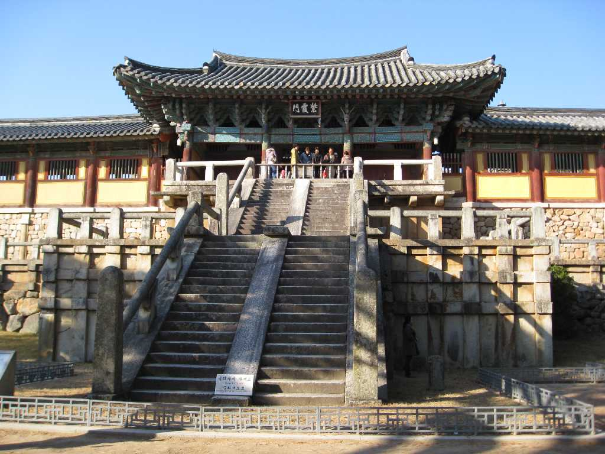
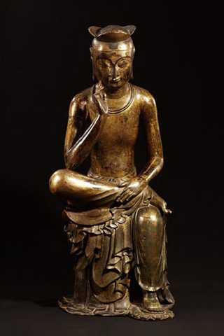

Bulguksa 佛國寺
７５１年に時の金大城が両親のために創建した佛國寺は釈迦の世界である「仏国土」つまり「極楽浄土」を現世に具現化したものである

金銅弥勒菩薩半跏思惟像 国立中央博物館(ソウル) National Museum of Korea
慶州で出土した韓国で最も美しく親しまれている７世紀前半作成された仏像で韓国の国宝に指定されている 韓国で６世紀後半から盛んに作られ日本に伝わり広隆寺の宝冠弥勒菩薩半跏思惟像に表われている